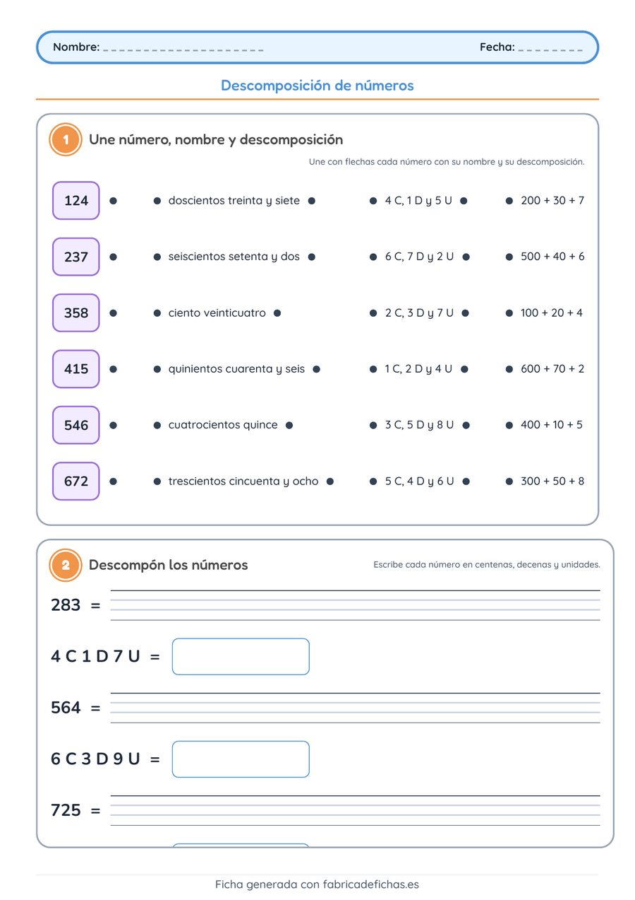

Gratis · Matemáticas · 3.º y 4.º Primaria
Une número, nombre y descomposición
Ficha de Matemáticas para 3.º y 4.º de Primaria: el alumno une con flechas cada número de tres cifras con su nombre escrito y su descomposición, y después descompone otros números.
Qué trabaja
- Lectura y escritura de números
- Centenas, decenas y unidades
- Descomposición
A4, lista para imprimir. Gratis para usar en clase o en casa.
Sirve para 3.º y 4.º de Primaria. Más fichas de Matemáticas: 3.º · 4.º
Hecha con nuestro generador de fichasMuy pronto podrás crear fichas como esta, a medida para tus alumnos, en un par de minutos. Saber más
Más fichas de Matemáticas de 3.º
 Comparar números de tres cifras: verdadero o falso2.º y 3.º Primaria¿Está bien puesto el signo? Marca V o F.
Comparar números de tres cifras: verdadero o falso2.º y 3.º Primaria¿Está bien puesto el signo? Marca V o F. Series numéricas2.º y 3.º PrimariaCompleta los vagones de cada serie.
Series numéricas2.º y 3.º PrimariaCompleta los vagones de cada serie. Comparar números de cuatro cifras3.º a 5.º PrimariaEscribe <, > o = entre números de cuatro cifras.
Comparar números de cuatro cifras3.º a 5.º PrimariaEscribe <, > o = entre números de cuatro cifras. Redondeo a la centena3.º y 4.º PrimariaAproxima cada número a la centena más cercana.
Redondeo a la centena3.º y 4.º PrimariaAproxima cada número a la centena más cercana.